Analyst at ClearView HCP, leveraging scientific expertise and industry knowledge to
provide actionable recommendations and cross-functional support to clients at the corporate, franchise,
and product levels for pharmaceutical, biotech, medical device, and diagnostics companies worldwide
Recent graduate from Duke University where I studied biomedical engineering and computer science
Previously:
Manufacturing Engineering Intern at Zimmer Biomet, leveraging orthotics to
alleviate pain and improve quality of life for people around the world
Researcher at the Segura Lab studying the formation of neural progenitor cell organelles
Research and Development Intern at Skeletal Dynamics designing implantable devices for proximal humerus repair
Intern at
OrthoPro Associates where I assisted in the evaluation, fabrication, and fitting of artificial limbs
Interests:
I have been a competitive rock climber for over 8 years and try to enjoy the outdoors any chance I get
I've been playing guitar since middle school and was trained mostly in the Spanish Classical style
I adore reading and have made my way through almost all of the fantasy recommendations I can find
I am extremely active so I try to practice basketball and yoga as much as I can
I designed and built a Bluetooth-enabled pacemaker from scratch to better understand the heart's electrical signals.
The device integrates operational amplifier circuitry, signal filtering, C++ firmware, and a Bluetooth module into a
single system that monitors cardiac activity and delivers a pacing pulse when the heart's own electrical activity fails.
I iterated on the design by testing against ECG signals and frog heart tissue, eventually producing a fully functional
pacemaker that induced heartbeats in response to simulated electrical failure. The pacemaker also transmitted measurements
to my iPhone over Bluetooth, where past readings could be recorded and reviewed. The project gave me hands-on experience with
analog circuit design, embedded programming, wireless communication, and in-vivo device testing.
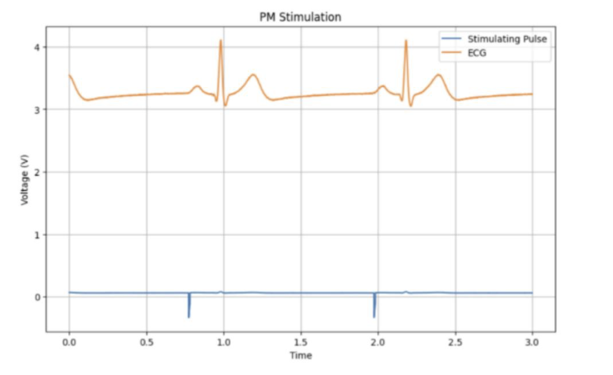
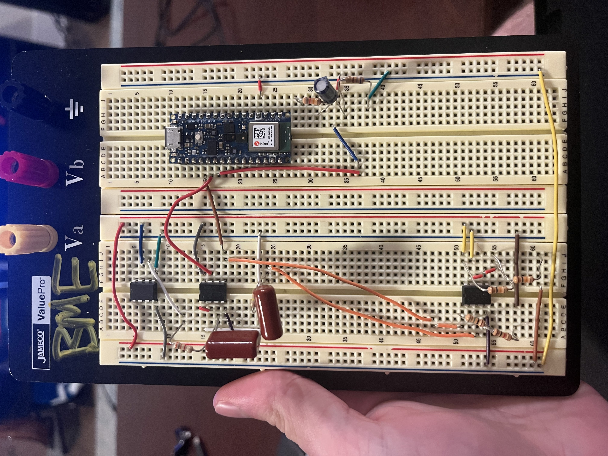
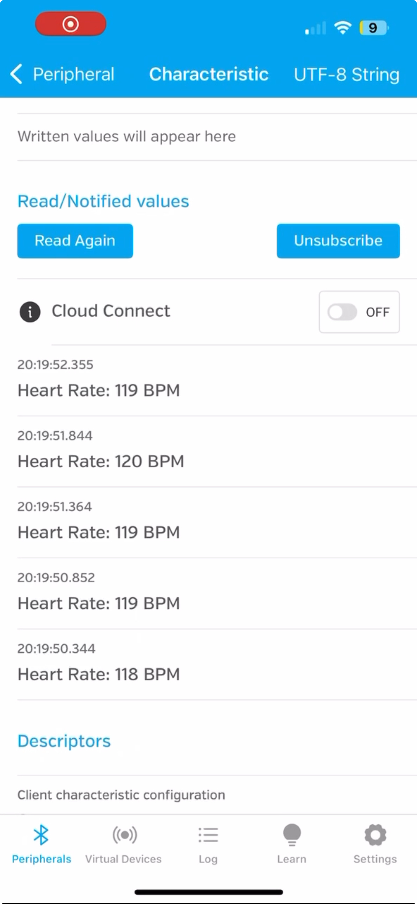
×
Mercury Project
Methylmercury (MeHg) poisoning is a persistent global health threat. Past outbreaks have claimed hundreds of lives and left
millions with lasting neurodevelopmental damage, and even sublethal exposure can cause neurological, cardiovascular, liver,
and kidney injury. With a team of classmates, I developed a compartmental model of methylmercury mass flow, accumulation,
and transformation in the human body, built from a system of differential equations representing the most vulnerable
organs and systems. We simulated both healthy and unhealthy chronic exposure over a 60-day dosing period and compared
how mercury accumulated in each organ in scope. The project strengthened my skills in physiological modeling,
differential equations, and translating a real-world health problem into a quantitative framework.
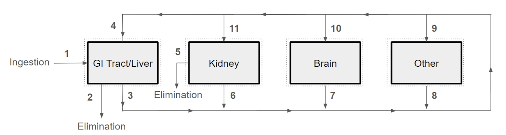
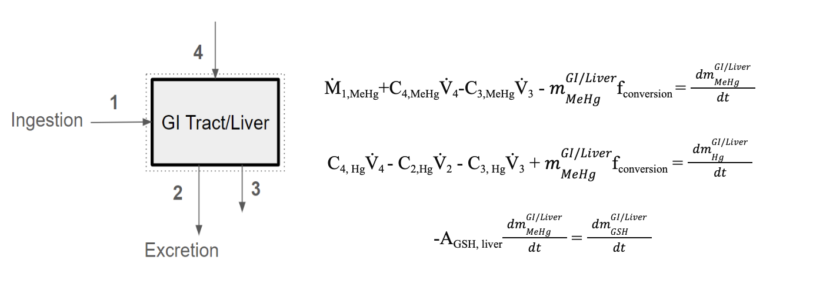
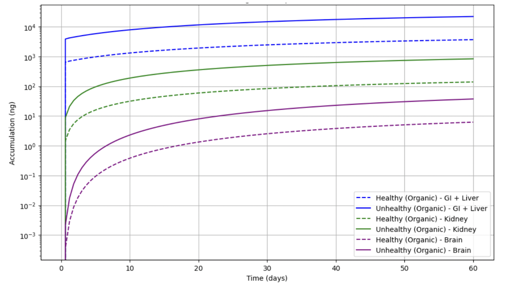
×
Lightbox
This lightbox is a small but complete example of the medical device prototyping process, spanning mechanical design,
electronics, and firmware. I modeled the enclosure in CAD (in the shape of Bert from Sesame Street), designed a
custom PCB in KiCad, and soldered the components and an Arduino onto the board. I then wrote firmware, structured as
a state machine, that controls three LEDs independently, with pulse duration and brightness adjustable through
potentiometers mounted on the PCB. The project gave me hands-on experience with CAD, PCB design and assembly, embedded
firmware, and integrating hardware and software into a working product.
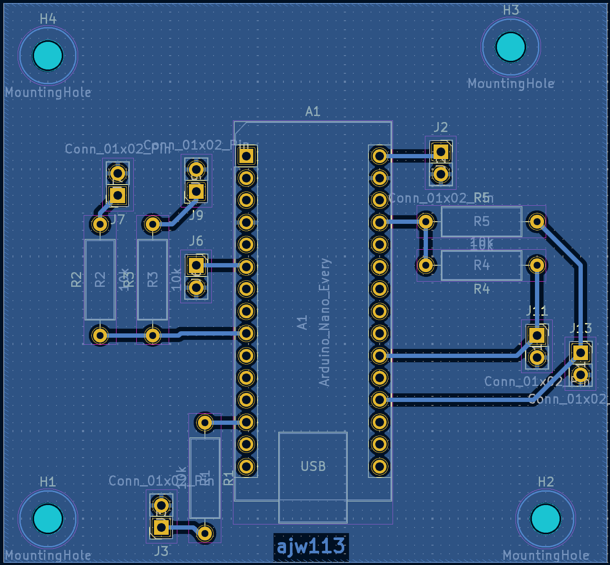
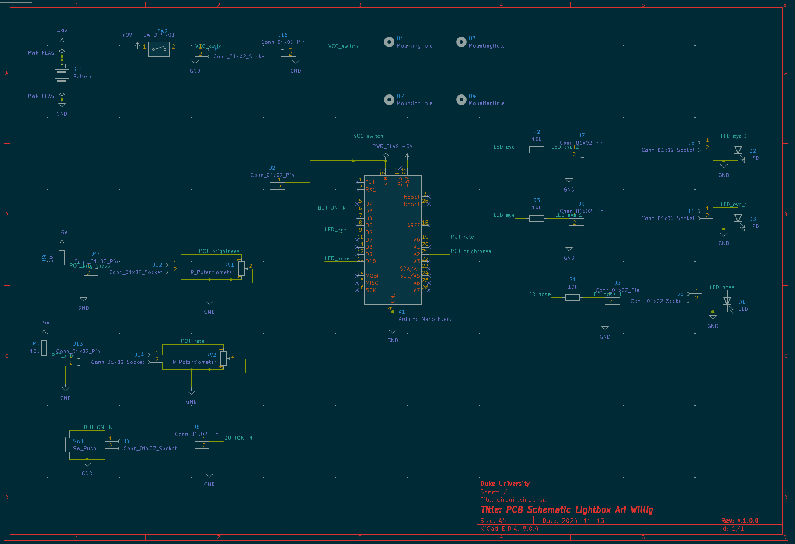
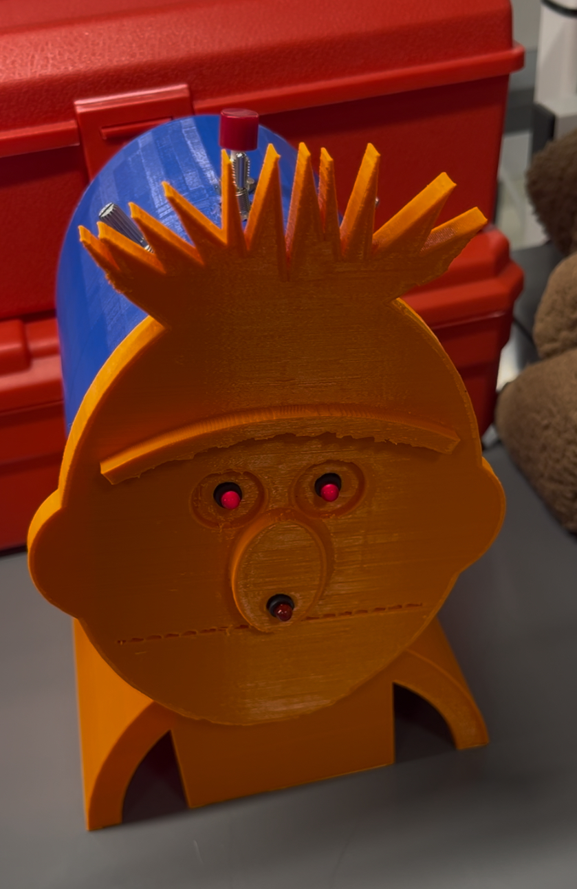
×
This Website!
I designed and built this website from scratch, teaching myself HTML, CSS, and JavaScript along the way.
HTML defines the structure, CSS handles the layout, parallax effects, and responsive styling, and JavaScript
powers the interactive navigation and project modals. The project gave me hands-on experience with front-end development,
responsive design, and building a clean, user-friendly presentation of my work.
×
Auralert Seizure Prediction Wearable
Auralert is a non-invasive, wearable system that predicts tonic-clonic seizures for people with drug-resistant epilepsy,
giving them time to move to a safe space. Along with a four-person team, I took the project from problem definition through a working, integrated prototype,
following a full design control process: stakeholder interviews with clinicians and patients, gap analysis, idea screening and scoring,
proof-of-principle testing, FMEA, and regulatory and ethics reviews. The system combines a behind-the-ear 3-lead EEG electrode holder, a custom PCB
in a back-mounted processing unit with an adjustable fabric harness, and a dual-input machine learning model
(a CNN on raw EEG plus an MLP on bandpower features). The model is hosted on a web server and classifies a user's state as interictal, pre-ictal,
or ictal. Classifications are sent to an iPhone app that alerts the user when a seizure is imminent or underway.
Across the project we designed, built, and tested every layer of this pipeline. On the hardware side, we built an analog front-end to capture EEG signals and validated it against a
laboratory-grade iWorx EEG system, with matching spectral content. We also iterated through 3D-printed and cast behind-the-ear enclosures and a
custom PCB. On the software side, we designed a dual-input classifier which reached 0.92 accuracy and a 0.959 ROC-AUC on held-out CHB-MIT clinical EEG data (when detecting seizures).
A Wi-Fi-enabled microcontroller transmits EEG data to a FastAPI-hosted model, and classifications are delivered
to an iPhone app that alerts the user. In full-pipeline testing on non-epileptic subjects, the wearable classified interictal states at
nearly 100% while stationary or moving the head. Walking introduced motion artifacts that degraded performance, which we identified as the main
target for future work along with clinical trials on epileptic patients and larger training datasets. The project gave me hands-on experience
with biopotential circuit design, embedded systems, ML for biosignals, rapid prototyping, and design control documentation.
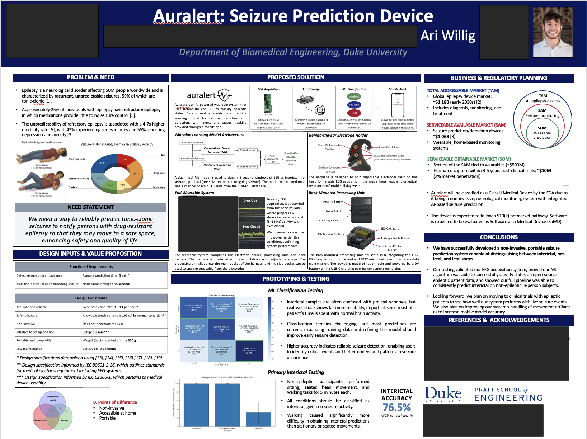
Final poster presentation for auralert seizure prediction device.
Certain images and names removed for confidentiality.Rendering of the auralert assembly, showing the signal processing unit and microcontrollers used
for wireless commmunication to the web server hosting the classification model.
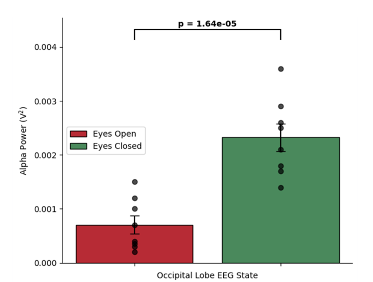
Alpha-band (8–12 Hz) power from occipital lobe EEG recordings, compared across eyes-open and eyes-closed conditions.
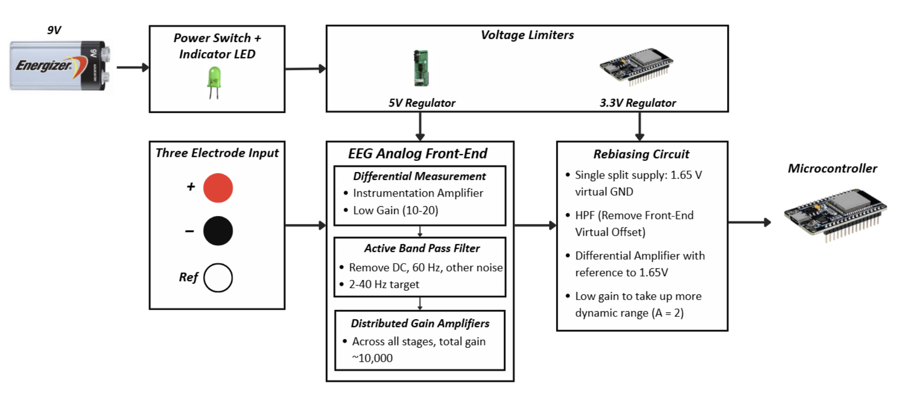
Signal flow through the EEG analog front end, from electrode input through amplification and filtering to digitization.
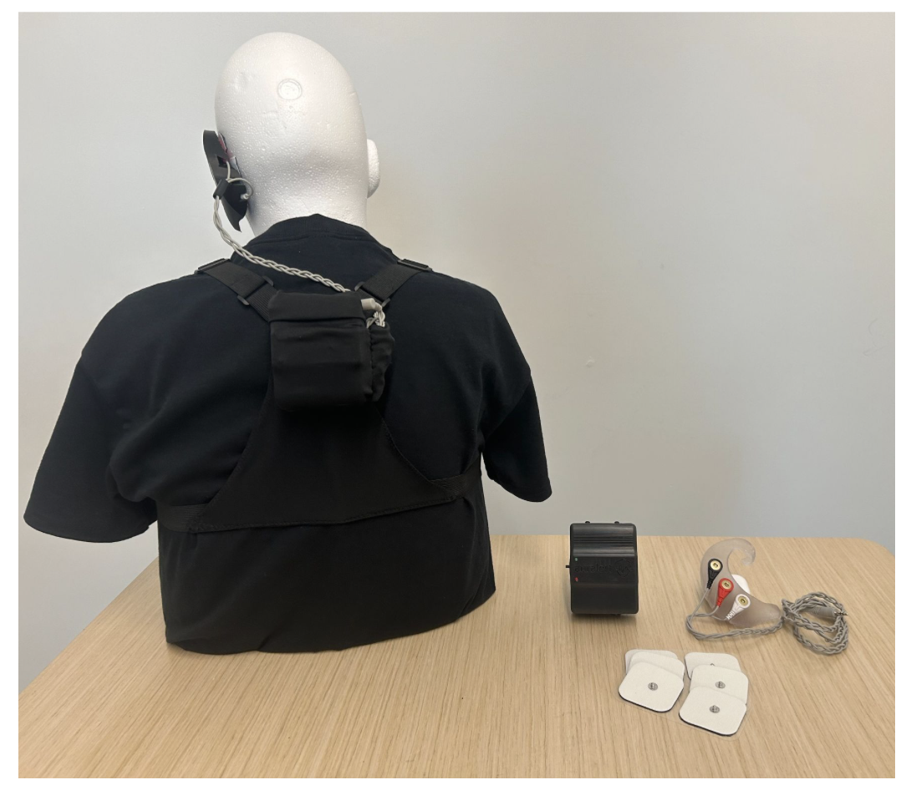
The final auralert prototype: behind-the-ear electrode holder, back-mounted processing unit, and adjustable fabric harness.
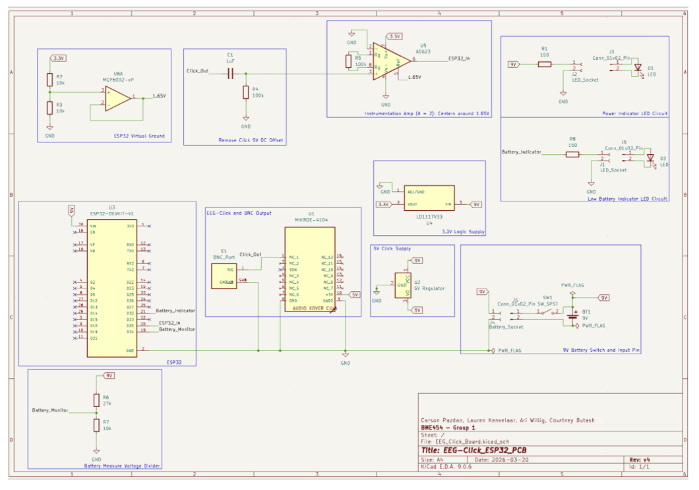
ECAD layout of the custom PCB for EEG signal processing and wireless transmission.
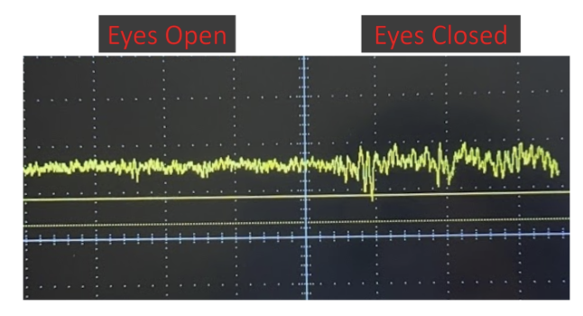
EEG signal detection results.
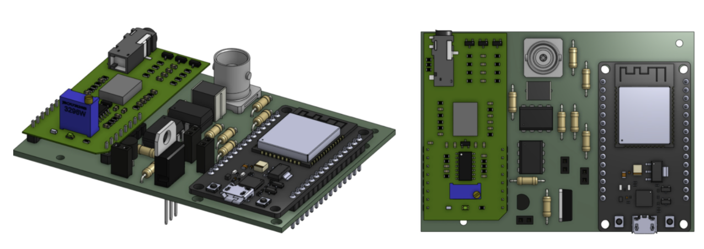
3D rendering of the PCB, integrating the signal acquisition circuitry and microcontroller used for wireless communication
with the classification model.
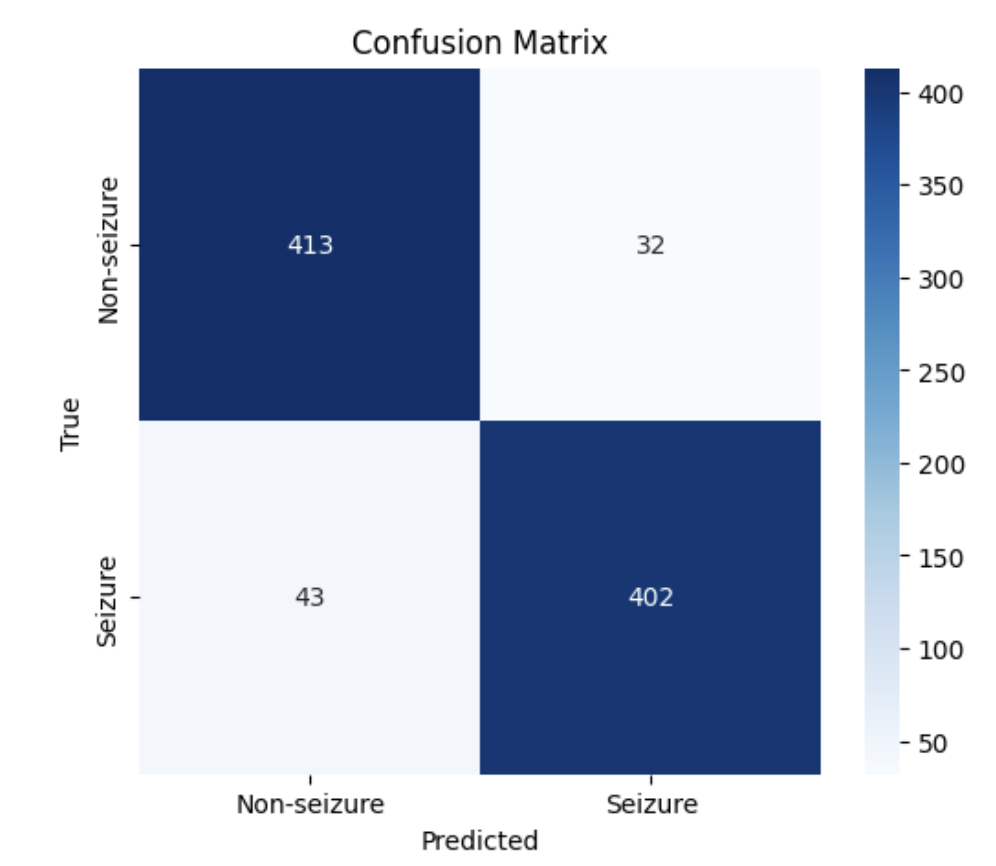
Confusion matrix for ictal versus non-ictal seizure detection on held-out CHB-MIT clinical EEG data.